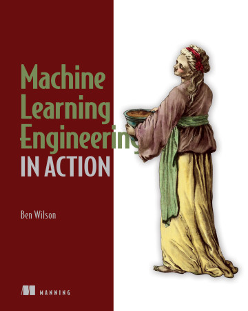

Machine Learning Engineering in Action
Authors: Ben Wilson
Year: 2022
Summary: This book introduces the essential practices and tools for machine learning engineers to design, deploy, and monitor systems that operate in production environments. It combines the technical and operational aspects needed to make machine learning engineering successful.
Table of Contents
Part 1: An Introduction to Machine Learning Engineering
- Chapter 1: What Is a Machine Learning Engineer?
- Chapter 2: Your Data Science Could Use Some Engineering
- Chapter 3: Before You Model: Planning and Scoping a Project
- Chapter 4: Before You Model: Communication and Logistics of Projects
- Chapter 5: Experimentation in Action: Planning and Researching an ML Project
- Chapter 6: Experimentation in Action: Testing and Evaluating a Project
- Chapter 7: Experimentation in Action: Moving from Prototype to MVP
- Chapter 8: Experimentation in Action: Finalizing an MVP with MLflow and Runtime Optimization
Part 2: Preparing for Production: Creating Maintainable ML
- Chapter 9: Modularity for ML: Writing Testable and Legible Code
- Chapter 10: Standards of Coding and Creating Maintainable ML Code
- Chapter 11: Model Measurement and Why It’s So Important
- Chapter 12: Holding on to Your Gains by Watching for Drift
- Chapter 13: ML Development Hubris
Part 3: Developing Production Machine Learning Code
- Chapter 14: Writing Production Code
- Chapter 15: Quality and Acceptance Testing
- Chapter 16: Production Infrastructure
Appendices
Content of each chapter
Chapter 1: What Is a Machine Learning Engineer?
This chapter covers
- The scope of knowledge and skills for machine learning engineers
- The six fundamental aspects of applied machine learning project work
- The functional purpose of machine learning engineers
Chapter 2: Your Data Science Could Use Some Engineering
This chapter covers
- Elucidating the differences between a data scientist and an ML engineer
- Focusing on simplicity in all project work to reduce risk
- Applying Agile fundamentals to ML project work
- Illustrating the differences and similarities between DevOps and MLOps
Chapter 3: Before You Model: Planning and Scoping a Project
This chapter covers
- Defining effective planning strategies for ML project work
- Using efficient methods to evaluate potential solutions to an ML problem
Chapter 4: Before You Model: Communication and Logistics of Projects
This chapter covers
- Structuring planning meetings for ML project work
- Soliciting feedback from a cross-functional team to ensure project health
- Conducting research, experimentation, and prototyping to minimize risk
- Including business rules logic early in a project
- Using communication strategies to engage nontechnical team members
Chapter 5: Experimentation in Action: Planning and Researching an ML Project
This chapter covers
- The details of a project’s research phase
- The process and methodology of conducting solution experimentation for a project
Chapter 6: Experimentation in Action: Testing and Evaluating a Project
This chapter covers
- Evaluating potential approaches for an ML project
- Objectively selecting an approach for a project’s implementation
Chapter 7: Experimentation in Action: Moving from Prototype to MVP
This chapter covers
- Techniques for hyperparameter tuning and the benefits of automated approaches
- Execution options for improving the performance of hyperparameter optimization
Chapter 8: Experimentation in Action: Finalizing an MVP with MLflow and Runtime Optimization
This chapter covers
- Approaches, tools, and methods to version-control ML code, models, and experiment results
- Scalable solutions for model training and inference
Chapter 9: Modularity for ML: Writing Testable and Legible Code
This chapter covers
- Demonstrating why monolithic script-coding patterns make ML projects more complex
- Understanding the complexity of troubleshooting non-abstracted code
- Applying basic abstraction to ML projects
- Implementing testable designs in ML code bases
Chapter 10: Standards of Coding and Creating Maintainable ML Code
This chapter covers
- Identifying ML code smells and how to correct them
- Reducing code complexity in ML projects
- Currying for cleaner and more understandable code
- Applying proper exception handling in ML code bases
- Understanding side effects and how they can create bugs
- Simplifying nested logic to improve comprehension
Chapter 11: Model Measurement and Why It’s So Important
This chapter covers
- Methodologies for determining the impact of a model
- A/B testing approaches for attribution data collection
Chapter 12: Holding on to Your Gains by Watching for Drift
This chapter covers
- Identifying and monitoring for drift in production solutions
- Defining responses to detected drift
Chapter 13: ML Development Hubris
This chapter covers
- Applying refactoring to overengineered implementations to increase development velocity
- Identifying code to target for refactoring
- Establishing simplicity-driven development practices
- Adopting new technologies via sustainable means
- Comparing build, buy, and prior art in implementations
Chapter 14: Writing Production Code
This chapter covers
- Validating feature data before attempting to use it for a model
- Monitoring features in production
- Monitoring all aspects of a production model life cycle
- Approaching projects with the goal of solving them in the simplest manner possible
- Defining a standard code architecture for ML projects
- Avoiding cargo cult behavior in ML
Chapter 15: Quality and Acceptance Testing
This chapter covers
- Establishing consistency for data sources used in ML
- Handling prediction failures gracefully with fallback logic
- Providing quality assurance for ML predictions
- Implementing explainable solutions
Chapter 16: Production Infrastructure
This chapter covers
- Implementing passive retraining with the use of a model registry
- Utilizing a feature store for model training and inference
- Selecting an appropriate serving architecture for ML solutions
Appendix A: Big O (and How to Think About Runtime Performance)
The goal of this appendix is to focus on understanding both the runtime characteristics of control code (all the code in your project that isn’t involved in training a model) and the ML algorithm itself that is being trained.
Appendix B: Setting Up a Development Environment
While many options exist for creating isolable environments for development of new projects, this appendix provides guidance on using Docker along with Conda’s package management suite of tools, just as the companion repository to this book does.